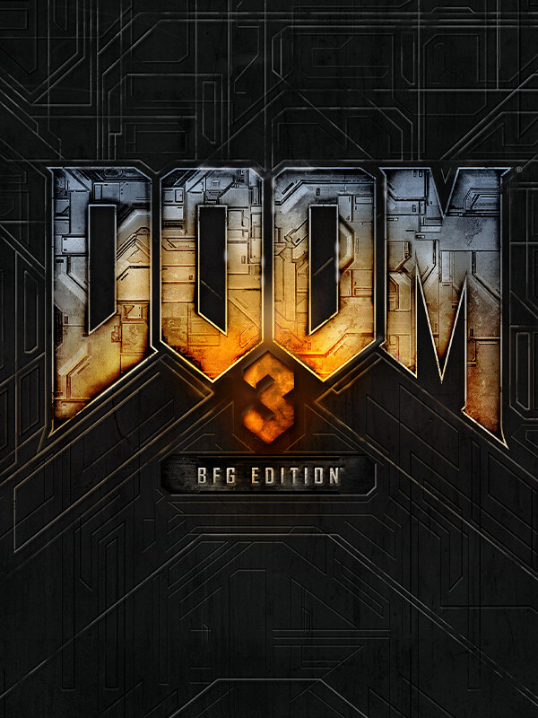

DOOM 3: BFG Edition
DOOM 3: BFG Edition
Details
|  | |
| Playtime | Not Played |
| Last Activity | Never |
| Added | 19/04/2024 17:04:02 |
| Modified | 17/05/2025 23:30:02 |
| Completion Status | Not Played |
| Library | Steam |
| Source | Steam |
| Platform | PC (Windows) |
| Release Date | 15/10/2012 |
| Community Score | 78 |
| Critic Score | 71 |
| User Score | |
| Genre | Shooter |
| Developer | id Software |
| Publisher | Bethesda Softworks |
| Feature | Multiplayer Single Player |
| Links | Wikipedia Steam Official GOG Wikia Android |
| Tag | 3D Vision Action Atmospheric Classic Dark Demons First-Person FPS Gore Great Soundtrack Horror Mars Multiplayer Sci-fi Shooter Singleplayer Space Survival Survival Horror Zombies |
Description
Developed by id Software, and originally released in 2004, DOOM 3 is a critically acclaimed, horror/action first-person shooter. It was remastered with the DOOM 3: BFG Edition in 2012. Now, get both versions of the base game and the expansions in one place.
Play the original, unaltered gameplay experience from 2004.
A massive demonic invasion has overwhelmed the Union Aerospace Corporation's (UAC) Mars Research Facility, leaving only chaos and horror in its wake. As one of only a few survivors, you must fight your way to hell and back against a horde of demons.
Two years following the unexplained disaster on Mars, the UAC returns to the abandoned facility to investigate a mysterious beacon buried deep in the ruins of the ancient civilization.
Released in 2012, this remastered version of DOOM 3 includes:
Owners Receive:
- The original DOOM 3 and Resurrection of Evil Expansion
- The remastered DOOM 3: BFG Edition
DOOM 3 - Original Version
Play the original, unaltered gameplay experience from 2004.
A massive demonic invasion has overwhelmed the Union Aerospace Corporation's (UAC) Mars Research Facility, leaving only chaos and horror in its wake. As one of only a few survivors, you must fight your way to hell and back against a horde of demons.
Resurrection of Evil Expansion – Original Version
Two years following the unexplained disaster on Mars, the UAC returns to the abandoned facility to investigate a mysterious beacon buried deep in the ruins of the ancient civilization.
- Battle six new demons including the Hunters
- Wield new weapons including the double-barreled shotgun
- Acquire demonic powers
- Control time to fight or evade traps
- Harness gravity to manipulate your environment
DOOM 3: BFG Edition
Released in 2012, this remastered version of DOOM 3 includes:
- Improved rendering and lighting
- Checkpoint save system
- Controller support
- Armor-mounted flashlight allows you to see and shoot at the same time
- Resurrection of Evil Expansion
- The Lost Mission Expansion
- An embedded version of DOOM (1993)
- An embedded version of DOOM II
- Stereoscopic 3D (on supported devices)